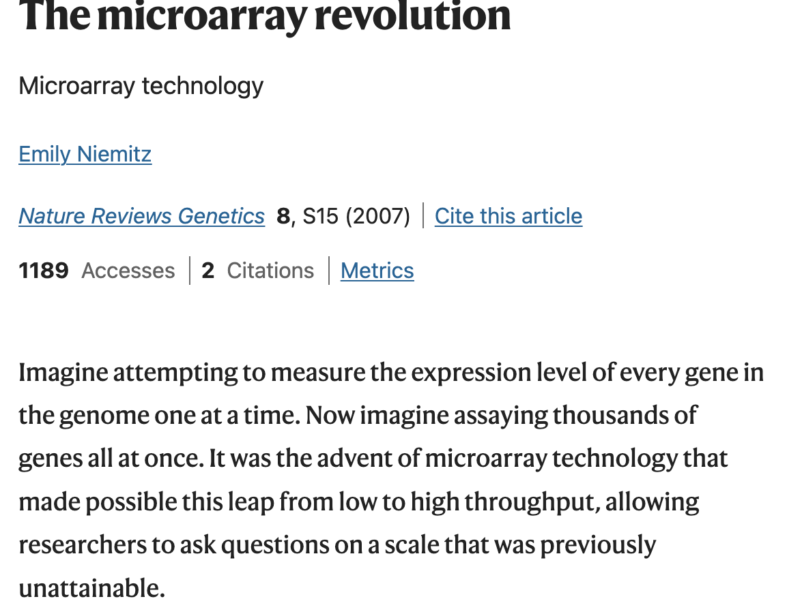
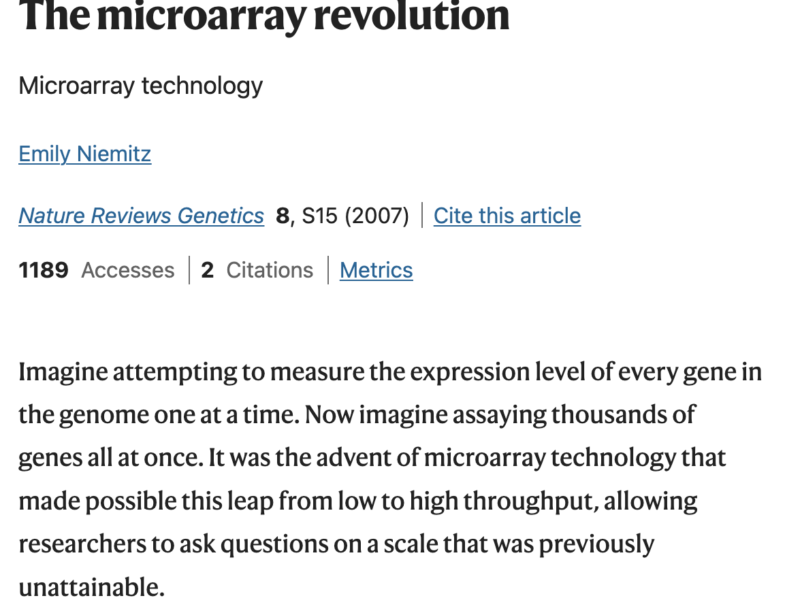
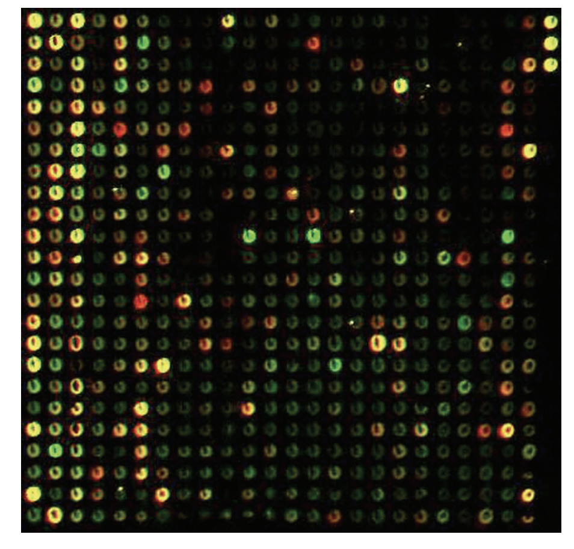
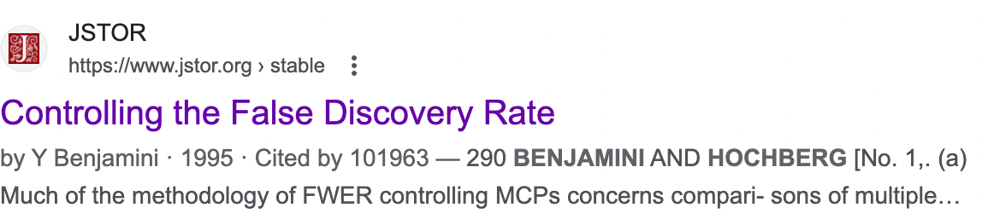

January 23, 2024


Suppose we have the expression level measurements for \(M\) genes on \(n\) observations, where observations belong to one of two (labelled) experimental conditions or populations.
Questions: Across the two (labelled) conditions/populations/etc., is gene \(j\) expressed at different levels, for all \(j = 1, 2, \ldots, M\)?
Statistically, a (large-scale) two-group testing problem:
What is the role of these hypothesis tests?
Overall philosophy:
We want to get a moderately sized list of genes that seem like promising candidates for further investigation, and we want it fast and cheap.
The “cost” of a false positive is that we waste resources on validating a red herring.
Key idea: We can live with (say) 10% of our resources going to waste in the follow-up phase.
After all, we have already saved a bunch of time and money by not investigating every gene in the full list!
This “screen and clean” philosophy is pervasive in high-throughput biological data contexts.
Ex. Genome-wide association studies: Measure tons of genetic markers and an observable characteristic. Test for association between all of the genetic variant and observable characteristics.
Ex. Neuroimaging: Simultaneously measure activity across the whole brain; divide up into 3d pixels (voxels), and test for differences between condition at all voxels.
Naively, based on last week, might say we care about the FWER: probability of falsely rejecting at least one null hypothesis. That was (sometimes) sensible for last week.
This is not sensible this week.
Why should we behave like we care so much about a single false positive? It’s not a catastrophe, it’s just inconvenient!
With thousands or millions of tests, FWER controlling procedures can return very few rejections indeed. Is such an aggressive screen useful?
A new concept emerges: we care about the proportion of resources wasted on red herrings in the validation experiments, as well as the number of validation experiments we get to do.
On the proportion of resources wasted on red herrings in the validation experiments:
Let \(X \sim F_X\) represent the data with which we test \(H_{0j}: T_j(F_X) = 0\) for all \(j = 1, 2, \ldots, p\). Let the follow-up cost for each gene be \(C\).
Then, the “wasted” cost over the total cost is: \[ \begin{align} \text{FDP}(X) &=\frac{C | \{j : F_X \in \mathcal{F}_{0j} \text{ and } p_j(X) \leq \alpha\}|}{C | \{ j: p_j(X) \leq \alpha \}|}, ~~~ \text{ for } \mathcal{F}_{0j} \equiv \{ F: T_j(F) = 0\} \\ &= \frac{| \{j : F_X \in \mathcal{F}_{0j} \text{ and } p_j(X) \leq \alpha\}|}{| \{ j: p_j(X) \leq \alpha \}|} \\ &= \frac{\text{Number of false discoveries}}{\text{Number of discoveries}} ~~~~ \text{(nb. take convention of } 0/0 = 0 \text{.)} \end{align} \]
Suppose that we test \(H_{0j}: T_j(F_X) \in \Theta_0\) for all \(j = 1, 2, \ldots, M\) using a random variable \(X \sim F_X\). Define the following notation:
| \(H_{0j}\) retained | \(H_{0j}\) rejected | Total | |
|---|---|---|---|
| \(H_{0j}\) true | \(TN(X)\) | \(FD(X)\) | \(M_0\) |
| \(H_{0j}\) false | \(FN(X)\) | \(TD(X)\) | \(M_1\) |
| Total | \(N(X)\) | \(R(X)\) | \(M\) |
Then, can write the false discovery proportion as:
\[ \text{FDP}(X) = \frac{\text{FD}(X)}{\max \{1, R(X)\}}.\] This computes vertically. Contrast the horizontal false positive proportion (\(\frac{\text{FD}(X)}{M_0}\)) or FWER.
We have a compelling reason to care about the FDP in this context:
\[ \text{FDP}(X) = \frac{\text{FD}(X)}{\max \{1, R(X)\}}.\]
But we can’t “control the FDP” in any single study: it’s a random variable. Instead, think about controlling its expectation, the false discovery rate:
\[ \text{FDR} = \mathbb{E}_{F_X}[\text{FDP}(X)].\]
More scientifically: if we were to repeat the process of a differential gene expression analysis study followed up by validation experiments on the discoveries, then the average proportion of resources wasted per study across these repeats is the FDR.
Imagine you are working with a genome scientist to analyze their RNA sequencing data. You apply a procedure that controls FDR at level \(10\%\) to their data set, and reject 100 null hypotheses. Your collaborator says:
“Oh, so no more than 10 genes out of that 100 really are differentially expressed?”
What is your answer?
What if your collaborator had said instead:
“Oh, so about 10 genes out of that 100 really are differentially expressed?”
What is your answer?
\[ \text{FDR} = \mathbb{E}_{F_X} \left [\frac{\text{FD}(X)}{\max \{1, R(X)\}} \right ]\]
In fact, since \(R(X)\) is random, this is a nonsensical thing to say.
More reasonable to want a probabilistic upper bound for \(R(X)\).
How much of the distribution of FDP is concentrated around the mean?
The variance of FDP also gives us some information about concentration.
\[ \text{FDR} = \mathbb{E}_{F_X} \left [\frac{\text{FD}(X)}{\max \{1, R(X)\}} \right ], ~~~~~ \text{FWER} = \mathbb{P}_{F_X} [ \text{FD}(X) \geq 1 ].\]
Intuitively, the FDR is more adaptive to non-null:null ratio and number of tests
For FDR, adding discoveries (rejecting true non-nulls) increases the denominator, allowing us to increase the numerator; logic holds no matter how many tests
But for FWER, only ever allowed to reject one true null, no matter how many non-nulls and no matter how many tests
Formally, FWER is always larger than the FDR, with equality when all tested hypotheses are null (Homework)
Imagine you are working with a genome scientist to analyze their microarray data. You apply a procedure that controls FDR at level \(10\%\) to their data set, and reject 100 null hypotheses. Your collaborator says:
“I’ve decided to focus on just the 10 genes in that rejection list that have the smallest unadjusted p-values. What can we say about those 10 genes?”
What is your answer?
What if instead they said:
“I’ve decided to focus on just the 10 genes in that rejection list that are in a particular biological pathway. What can we say about those 10 genes?”
What is your answer?
We know that the following quantity is below 0.1: \[ \text{FDR} = \mathbb{E}_{F_X} \left [\frac{\text{FD}(X)}{\max \{1, R(X)\}} \right ].\]
Your collaborator is tempted to think about the FDR among the 10 smallest:
\[\mathbb{E}_{F_X} \left [\frac{\# \{ \text{genes that are among 10 smallest, are rejected in }X\text{, and are null}\} }{\max \{1, \# \{\text{genes that are among 10 smallest and were rejected in } X \}} \right ]\]
But the numerator and the denominator have both changed, making it impossible to argue that one of them is always smaller than the other!
While the “biological pathway” version might feel intuitively more likely to be true, the logic above holds even when the subset of interest is fixed.
By contrast, \(\text{FWER} = \mathbb{P}_{F_X} [ \text{FD}(X) \geq 1 ]\) does have the subset property.
Consider:
The former is ALWAYS larger!
That means that if there is \(\geq 1\) false discovery based on \(X\) within a subset of genes, then there is \(\geq 1\) false discovery based on \(X\) within all \(M\) genes. So
\[\text{FWER on subset} \leq \text{FWER on all}.\]
This logic holds even if the gene subset is selected using the data; this has implications for selective inference (next two weeks!)
Let \(X \sim F_X\) represent the data with which we test \(H_{0j}: T_j(F_X) = 0\) for all \(j = 1, 2, \ldots, M\).
The naive, unadjusted idea for screening here is:
This will not control the FDR. We know this for sure because:
(Not a very satisfying answer; we will get a more satisfying one on Thursday!)
We already know some ways, because FWER is always bigger than FDR. That means that any FWER controlling procedure controls FDR.
But doing so would be unnecessarily conservative.
We will focus on the landmark paper and method: Benjamini and Hochberg (1995).

Showed that a procedure (independently developed by Eklund and Simes) controls the FDR.
This procedure is now commonly called the “Benjamini-Hochberg”, or BH procedure.
The idea: Order p-values \(p_{(1)} \leq \ldots \leq p_{(M)}\):
If \(p_{(M)} \leq \alpha\), then reject \(H_{01}, \ldots, H_{0M}\) and stop; otherwise keep going
If \(p_{(M-1)} \leq \alpha \left ( \frac{m-1}{m} \right )\), then reject \(H_{01}\), … \(H_{0(M-1)}\) and stop; otherwise keep going
Keep going until you run out of p-values
Corresponds to the following rule: \[\text{Reject}(p_1, \ldots, p_M) = \left \{ j: p_j \leq \max \{p_{(j)}: p_{(j)} \leq \frac{\alpha j}{m} \right \}.\]
Here, Hochberg is a variant on Holm that controls FWER under independence; it uses the formula \(\text{Reject}(p_1, \ldots, p_M) = \left \{ j : p_j \leq \max \{p_{(j)}: p_{(j)} \leq \alpha/(M+1 - j)\} \right \}\).
Why does BH work? To get some intuition, we’ll set down a simple model and notation.
Define \(H_{0j}: \mathcal{T}_j(F_X) = 0\) for \(j = 1, 2, \ldots, M\), and let \(X \sim F_X\) be the data that we use to test. Let \(M_0 = |\{j: F_X \in \mathcal{F}_{0j}\}|\).
Let \(p_j(X) \sim \text{Uniform}(0, 1)\) for all \(j\) with \(H_{0j}\) true, and \(p_j(X) \sim F_p\) for all \(j\) with \(H_{0j}\) false.
We’ll use the notation \(\text{FD}(X; t)\) to denote the number of false discoveries if you reject all p-values \(\leq t\).
For any fixed threshold \(t\) and \(M\) big:
\[ \begin{align} \text{FDR}_t &= \mathbb{E}_{F_X} \left [\frac{\text{FD}(X; t)}{\max \{1, R(X; t)\}} \right ] \\ &\approx \frac{\mathbb{E}_{F_X} [\text{FD}(X; t)]/M}{\mathbb{E}_{F_X} [R(X; t)]/M} \\ &= \frac{\mathbb{E}_{F_X} [ \sum_{j: H_{0j} \text{ true}} 1 \{p_j(X) \leq t \} /m]}{\mathbb{E}_{F_X} [ \sum_{j=1}^M 1 \{p_j(X) \leq t \} /M]}\\ &= \frac{M_0 \mathbb{P}(\text{Uniform}(0, 1) \leq t)/M}{\mathbb{E}_{F_X} [ \sum_{j=1}^M 1 \{p_j(X) \leq t \} /M]} = \frac{(M_0/M)t}{\mathbb{E}_{F_X} [ \sum_{j=1}^M 1 \{p_j(X) \leq t \} /M ]} \end{align} \]
\[FDR_t \approx \frac{(M_0/M)t}{\mathbb{E}_{F_X} [ \sum_{j=1}^M 1 \{p_j(X) \leq t \} /M ]}\]
We don’t know what \(M_0/M\) is, but we can conservatively estimate it by 1.
We don’t know what \(\mathbb{E}_{F_X} [ \sum_{j=1}^M 1 \{p_j(X) \leq t \} /M ]\) is, but given a realization \(x\) from \(X \sim F_X\), we can estimate it with the empirical equivalent. Leads to:
\[\hat{FDR}_t(x) = \frac{t}{\sum_{j=1}^M 1 \{p_j(x) \leq t \}/M}.\]
Assuming that there are no ties in p-values, and plugging in \(p_{(j)}(x)\) to RHS yields \(\frac{p_{(j)}}{j/m}\).
Recall that BH says to reject every hypothesis with a p-value no larger than \(p_{(\hat j)}\), where
\[ \hat j = \max \left \{j: p_{(j)} \leq \frac{\alpha j}{M} \right \}.\]
Rearranging terms, no larger than \[ \hat j = \max \left \{j: \frac{p_{(j)}}{j/m} \leq \alpha \right \}\]
Recall that \(\frac{p_{(j)}}{j/m}\) is an estimate of the FDR if we reject at \(p_{(j)}\)!
Do you like Bayesian measures of uncertainty? Augment our simple model with a prior:
\[ 1\{ H_{0j} \text{ false}\} \overset{iid}{\sim} \text{Bernoulli}(\pi_0)\]
Then for any threshold \(t\), can derive the “Bayesian FDR”:
\[\mathbb{P}(H_{0j} \text{ true} \mid p_j(x) \leq t) = \frac{t\pi_0}{\mathbb{P}(p_j(X) \leq t)}. \] An empirical Bayesian then estimates with frequentist principles to get: \[\mathbb{P}(H_{0j} \text{ true} \mid p_j(x) \leq t) \approx \frac{t}{\sum_{j'=1}^M 1 \{p_{j'}(x) \leq t \}/M}. \]
\[\mathbb{P}(H_{0j} \text{ true} \mid p_j(x) \leq t) \approx \frac{t}{\sum_{j=1}^M 1 \{p_j(x) \leq t \}/M}. \] This is our frequentist estimate of the approximation to \(FDR_t\) from earlier!
So another interpretation is that BH takes the largest threshold so that the estimated Bayesian FDR is \(\leq \alpha\).
If we buy into Bayesian notions of probability, can even say rejected cases “have estimated probability of being null lower than \(\alpha\)”.
Benjamini and Hochberg (1995) showed the following result.
Suppose that we test \(H_{0j}\) for \(j = 1, 2, \ldots, M\) using \(X \sim F_X\), and choose which hypotheses to reject by plugging p-values \(p_1(X), \ldots, p_M(X)\) into the BH procedure.
Suppose that \(p_1(X), \ldots, p_M(X)\) are valid .
Then, \[\text{FDR}_{BH} = \frac{M_0}{M} \alpha \leq \alpha.\]
Benjamini and Yekeutili (2001) showed that:
If the joint distribution of the p-values is independent, OR the subset of p-values corresponding to true nulls is ``positive regression dependence on a subset” (PRDS), then \[ \text{FDR}_{BH} = \frac{M_0}{M} \alpha \leq \alpha.\]
PRDS is technical and not so interpretable, but can show it holds for important subcases: e.g. p-values constructed with test statistics where the null distributions are jointly multivariate normal with all off-diagonal covariance matrix entries positive.
p.adjust(..., method = "BY") in RThe idea: Convert \(p_1, \ldots, p_M\) to \(\tilde p_1, \ldots, \tilde p_M\) so that \[\text{Reject}(p_1, \ldots, p_M) = \{j: \tilde p_j \leq \alpha\}\]
See e.g. stats::p.adjust(). General definition that applies to any rejection procedure.
Raw p-values have a natural interpretation: “If the null hypothesis were true, then how often would I see such an extreme value of the test statistic, were I to repeat the experiment?”.
Justifies interpretation as “measure of evidence against the null”, and justifies thumb rules (< 0.001 = “overwhelming”, < 0.01 = “strong”, < 0.05 = “moderate”)
Adjusted p-values have no such interpretation; so what can we read into (say) \(\tilde p_j = 0.035\)?
In the case of FDR adjustment methods, q-values provide an interpretable alternative; see Storey and Tibshirani (2003) if you’re interested in learning more.
Multiple testing: Whenever we conduct more than one hypothesis test in a single analysis, and look at the outcome of all of them.
We saw very different answers to these questions within a single class last week, and then once again very different answers this week!
Does that make sense?
“I don’t know, it depends on the scientific problem at hand.” - My annoying partner, whenever I ask him ANY question involving statistics.
| Clinical Trials | Genomics | |
|---|---|---|
| Number of tests? | A few | Lots |
| Hypothesis selection | Carefully curated | Little to no screening |
| False positives? | Awful | Can live with a few |
The science is different, so no wonder the answers are different.
“You better think (think) about what you’re trying to do …” - Aretha Franklin, “Think”